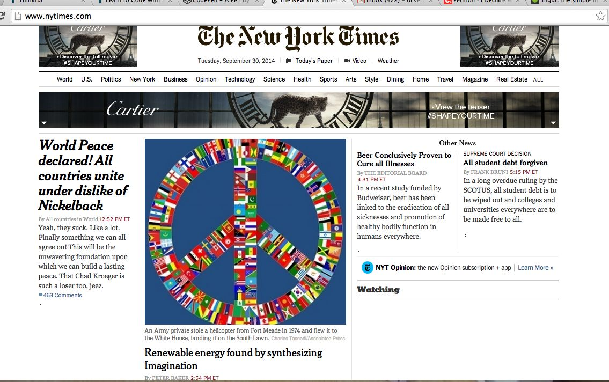
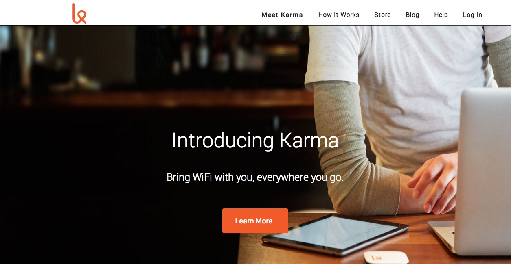
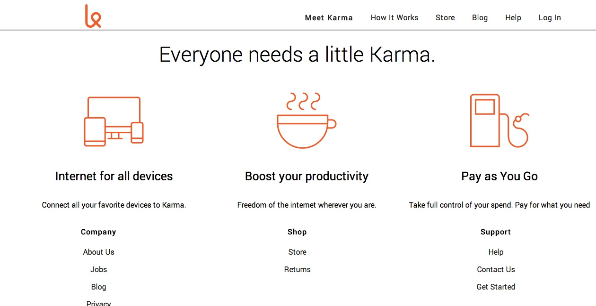

Hi, I'm
I'm a front end web developer. I love spending time with friends and family and watching lots of movies. I love the internet and I'm excited to develop content on it. I am eager to learn as much as I can so I can turn my knowledge into a career in web development.
When I'm not working in web development, I like to hang out with my Basset Hound, Mavis. She is ridiculously cute.
I hail from the great state of Michigan, though I moved to Minnesota, where I live today, when I was just 9 years old. I love it in Minneapolis and couldn't imagine living anywhere else. That is until it's January and 50 below zero and then I pretty much want to move to Hawaii and never look back.
I love it in Minneapolis because it's just big enough to keep me constantly entertained, but still small enough that I don't get lost or overwhelmed here.
My favorite hobbies include:Trivia, Video Games, Movies, TV, and Biking.
My Dream Job would be to build awesome websites for a tidy sum of course.
I like lots of different music. I like to support the local scene, so I listen to a lot of local hip hop like Atmosphere, Brother Ali, and Heiruspecs. Also I like a lot of indie rock like The Decemberists and others.
Here are some projects I have worked on recently
I "hacked" the New York Times website to create some fun and interesting headlines
I also cloned the Karma ISP website
 